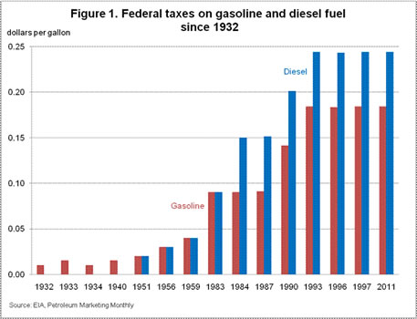
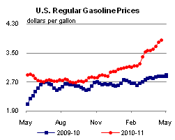
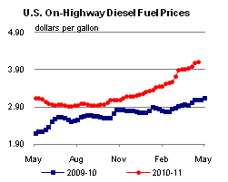
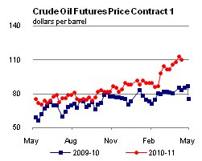
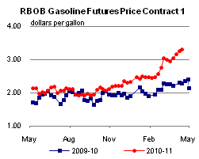
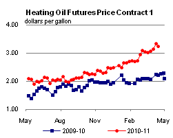
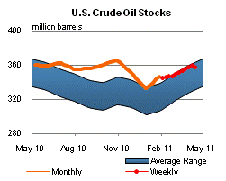
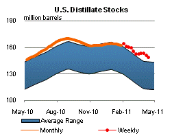
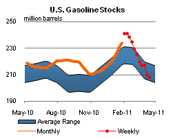
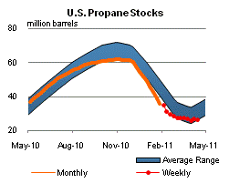

Released: April 20, 2011
Next Release: April 27, 2011
Motor fuel taxes in the United States
Federal and State taxes levied on gasoline and diesel fuels for "on-highway use" generate significant revenue for the Federal Highway Trust Fund and State treasuries. At present, nearly all of this Federal tax income is directed to building and maintaining roadways and funding mass transportation projects. According to the Federal Highway Administration, monies received into the Federal Highway Trust Fund during the 2010 Fiscal Year totaled $24.8 billion for gasoline and $9.1 billion for diesel and special fuels ( FHWA Table FE-10).
Federal excise taxes on gasoline were first adopted in 1932, while Federal taxes on diesel fuel were first imposed in 1951, during the Korean War. The Highway Trust Fund, established by the Federal-Aid Highway Act of 1956 and the Highway Revenue Act of 1956, was designed specifically to finance a national system of interstate highways. The Fund marked the first time that motor fuel tax revenues were dedicated to roadway construction and maintenance.
The Fund has undergone some transformation in the intervening years; most notably in 1982 when the Surface Transportation Assistance Act established the Mass Transit Account to fund mass transit needs and the addition of the Leaking Underground Storage Tank Fund (LUST) fee enacted in 1986 (the LUST fee expired at the beginning of 1996, but was reinstated in October 1997). Current Federal motor fuel taxes (for on-highway use) are 18.4 cents per gallon for gasoline and 24.4 cents per gallon for diesel (Figure 1).

The tax treatment of ethanol fuel mixtures (e.g., a 10-percent alcohol/ 90 percent gasoline mixture) has varied through the years. The Energy Tax Act of 1978 differentiated ethanol-blended gasoline from non-ethanol-blended gasoline and specifically exempted it from being taxed. Prior to that time, ethanol-blended gasoline had been regarded as non-ethanol-blended gasoline and taxed as such. The Surface Transportation Assistance Act of 1982 replaced the full exemption for ethanol-blended gasoline with a partial exemption. With the passage of the American Jobs Creation Act of 2004, ethanol-blended gasoline is taxed at the same 18.4 cents-per-gallon rate applied to other gasoline; however, blenders receive a tax credit for each gallon of ethanol used to produce a qualified fuel mixture, including ethanol-blended gasoline. The tax credit is currently 45 cents per gallon of ethanol used in the blending process. One effect of the change from a partial excise tax exemption to a tax credit is that increases in the amount of ethanol blended into gasoline now raise, rather than lower, the amount of excise taxes applied to the Highway Trust Fund, because higher levels of ethanol blending generally result in a higher volume of fuel consumption, given that ethanol has a lower energy content per gallon than non-ethanol-blended gasoline.
The Energy Policy Act of 2005 required that 7.5 billion gallons of renewable fuel (basically ethanol) be blended into gasoline by 2012. Two years later, the Energy Independence and Security Act of 2007 expanded the target to 36 billion gallons of renewable fuels in transportation fuel (including diesel) by 2022. The U.S. Energy Information Administration (EIA) projects that as a result of this legislation, penetration of biofuels will increase in the future.
At the present time, the Federal tax accounts for approximately 5-6 percent of the average retail price for gasoline, down from about 17 percent in 1993, the most recent year when a significant change in rates occurred. The proportion of taxes in the final retail cost of motor fuels in other industrialized nations is substantially higher. For more information see the following links: European Union map; Federal Canada; and Japan (pages 9 and 18).
At the State level, EIA estimates taxes on gasoline and diesel fuel average 22.6 cents per gallon and 23.1 cents per gallon, respectively, as of January 1, 2011 (see Table EN1). In contrast to the allocation of Federal tax funds, while revenue generated from State taxes may be principally channeled to roadway construction and maintenance, appreciable portions of these monies may also be directed to other items in a State's overall budget.
Set-rate Federal and State volumetric taxes do not account for all taxes on the purchase of on-highway use motor fuels. Many States apply additional sales taxes and other fees. In California, for example, the total per-gallon tax includes Federal excise tax (18.4 cents per gallon), State excise tax (35.3 cents per gallon), State sales tax (2.25 percent), a State underground storage tank fee (2.0 cents per gallon), and an additional tax may be determined by the locality or municipality where the purchase was made.
Motor fuels sales in Chicago have a similar multi-level tax structure. Taxes there include Federal excise tax, State excise tax (19.0 cents per gallon), State sales tax (6.25 percent), Cook County Retail Sale of Gasoline Tax (6.0 cents per gallon), City of Chicago tax on gasoline (5.0 cents per gallon), plus additional small fees.
Many States use an indexing system (e.g. setting the tax as a fixed percentage to the wholesale price of gasoline) to set at least a portion of their tax rates. Traditionally, excise and other taxes are set by the legislative branch. Rate changes, therefore, involve the creation and passage of specific bills during the budgeting process. Indexing can allow for a more rapid adjustment in rates (in reaction to such factors as inflation and declining consumption) without requiring legislative action. Consumer or producer price indexes are most often used in this process. The statute permitting this system often limits rate changes during a given period. Further, in times of unusually high price volatility (such as that seen during late 2008), the executive or legislative branch has the power to halt impending rate adjustments.
Retail gasoline and diesel prices rise for the fourth straight week
The U.S. average retail price of regular gasoline increased more than a nickel from last week to $3.84 per gallon. This is $0.98 per gallon higher than last year at this time and is the highest price in April since EIA began tracking weekly data in 1990. The East Coast region tallied the biggest gain in price, more than six cents higher than the previous week, and was followed by the Gulf Coast where prices increased over five cents. The West Coast notched a gain of about five cents to send the average price to $4.08 per gallon; it remains the only major region in the country where gasoline averages more than $4 per gallon. The Midwest registered a four-cent increase on the week. The gasoline price in the Rocky Mountains was also about four cents higher but the region continues to have the lowest gasoline average in the country with the price at $3.61 per gallon.
Almost three cents was added to the national average diesel price this week to reach $4.11 per gallon. The diesel price is $1.03 per gallon higher than last year at this time. The biggest increase was on the Gulf Coast, where the average climbed more than three cents per gallon. However, the Gulf Coast diesel price is the least expensive in the country at $4.03 per gallon. The East Coast, Midwest, and Rocky Mountain regions all registered gains of almost three cents on the week. Although the West Coast added only a penny this week, West Coast diesel prices are the highest in the country, averaging $4.32 per gallon.
Propane stocks drop again
Total U.S. inventories of propane declined by 0.4 million barrels last week to end at 26.4 million barrels. Midwest stocks declined by 0.6 million barrels, while Gulf Coast stocks also fell by 0.1 million barrels. The East Coast region added 0.4 million barrels of propane inventory and the Rocky Mountain/West Coast region grew slightly. Propylene non-fuel use inventories represented 6.0 percent of total propane inventories.
Text from the previous editions of This Week In Petroleum is accessible through a link at the top right-hand corner of this page.
|  |  | ||||||
| Retail Data | Changes From | Retail Data | Changes From | ||||
| 04/18/11 | Week | Year | 04/18/11 | Week | Year | ||
| Gasoline | 3.844 | Diesel Fuel | 4.105 | ||||
|  |  | ||||||||||||||||||||||||||
|
 | ||||||||||||||||||||||||||
| *Note: Crude Oil Price in Dollars per Barrel. | |||||||||||||||||||||||||||
|  |  | ||||||
|  |  | ||||||
| Stocks Data | Changes From | Stocks Data | Changes From | ||||
| 04/15/11 | Week | Year | 04/15/11 | Week | Year | ||
| Crude Oil | 357.0 | Distillate | 148.3 | ||||
| Gasoline | 208.1 | Propane | 26.386 | ||||